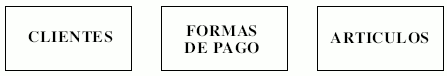
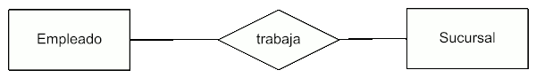
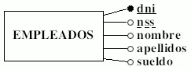
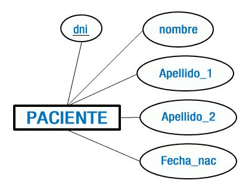
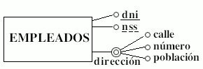
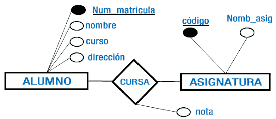

El model relacional es basa en el concepte matemàtic de relació, que es representa gràficament mitjançant una taula.
Construccions bàsiques
Entitat
Per entitat entenem un objecte del món real que podem distingir de la resta d'objectes i del qual ens interessen algunes propietats. Alguns exemples són: un empleat, un producte, una assignatura, un préstec bancari, una comanda d'un client, etc.
En el model E-R les entitats es representen amb un rectangle. El nom de l'entitat s'escriu en majúscules dins del rectangle (alguns SGBD no accepten els accents en els noms, per la qual cosa és convenient no posar-los).

Relació
Es defineix Relació (Interrelació) com una associació entre entitats. Les relacions es representen en els diagrames del model ER mitjançant un rombe. Al costat del rombe s'indica el nom de la relació amb lletres majúscules. Exemple: considerem una entitat EMPLEAT i una entitat DESPATX i suposem que als empleats se'ls assignen despatxos on treballar. La relació seria ASIGNACIO.

Atribut
Les propietats dels objectes es denominen atributs. Per tant, les entitats estan formades per atributs. Per exemple, sobre una entitat EMPLEAT ens pot interessar tindre els següents atributs: dni, nss, nom, cognoms, sou, etc.
D'entre els atributs hi haurà un o un conjunt d'ells que no es repeteix; a aquest atribut o conjunt d'atributs se'n diu clau de l'entitat, (per a l'entitat persona una clau seriosa dni). Els valors de la clau han de ser únics (un dni no pot repetir-se) i estar formats pel menor nombre possible d'atributs. Si existeix més d'una possibilitat d'atribut, o conjunt d'atributs, que identifiquen a una entitat, a un se'l denominarà Clau Primària (subratllat continu) i als altres Clau Candidata (subratllat discontinu).
Els atributs d'una entitat es representen mitjançant el·lipses o cercles etiquetats, que es connecten per una línia recta a l'entitat o relació que qualifiquen, cadascun dels quals ha de tindre un nom únic i que faça referència al seu contingut. Els noms dels atributs han d'anar en minúscules..
Cada atribut té un conjunt de valors associats denominat domini. El domini defineix tots els valors possibles que pot prendre un atribut.

Els atributs poden ser:
- Obligatori / Opcional: un atribut obligatori és aquell que sempre ha d'estar definit, com per exemple, el que identifica a una entitat (En l'entitat EMPLEAT, un atribut obligatori podria ser 'dni', que no es pot deixar buit perquè gràcies a ell s'identifiquen totes i cadascuna de les instàncies d'eixa entitat). Un atribut opcional, en canvi, pot quedar sense definir per a algunes de les instàncies de l'entitat (per a EMPLEAT un atribut opcional podria ser 'edat', que és un atribut que no és imprescindible per a la identificació de les instàncies de l'entitat).
- Simples / Compostos: un atribut simple ( o atòmic ) és un atribut que té un sol component, que no es pot dividir en parts més xicotetes que tinguen un significat propi, un exemple podria ser el "dni" d'una persona. Un atribut compost és un atribut amb diversos components, cadascun amb un significat per si mateix. Es representa amb una doble línia de contorn. Per exemple, considerant l'adreça" d'una persona com la unió del carrer on viu, el número i la població. Els atributs compostos es representen amb un cercle connectat amb altres cercles, que representen els components de l'atribut, per una línia.
-
Univaluado / Multivaluado: un atribut és univaluado si té un únic valor per a cada ocurrència d'una entitat. És multivaluado si pot tindre més d'un valor per a cada unitat (exemple: telefonos). Tots els atributs han de ser univaluados.
-
Derivat: El seu valor no es guardarà en la taula d'una base de dades ja que s'obté mitjançant un càlcul, un exemple d'atribut derivat o calculat és l'edat, obtinguda a partir d'un altre atribut: la data de naixement.
A vegades interessa reflectir algunes propietats de les interrelacions. Per aquest motiu, les interrelacions poden tindre també atributs. Els atributs de les interrelacions tenen un domini, han de prendre valors atòmics i han de ser univaluados.
